李嘉蕊 · 24002120526 · 任务一 Key 自查 4 张、任务二 客服约束 2 张、任务三 双平台聊天 2 张、任务四 知识库、任务五 图像识别、任务六 语音识别，共 11 张截图。
| 检查项 | 结果 | 证据 |
|---|---|---|
.env 是否在 .gitignore 中 | 是，第 2 行 | 截图 1 |
.env 是否被 Git 跟踪 | 否，git ls-files 无输出 | 截图 1 |
| 前端代码是否残留 Key | 否，sk- 在 frontend 中 0 命中 | 截图 2 |
.env 截图是否打码 | 是，统一为 sk-**** | 截图 3 |
| Key 失效时是否有友好提示（加分项） | 有，红色错误提示而非白屏 | 截图 4 |
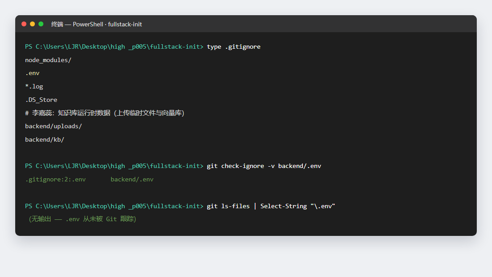
.gitignore 第 2 行为 .env；git check-ignore 命中该规则；git ls-files 查不到 .env，说明从未被提交。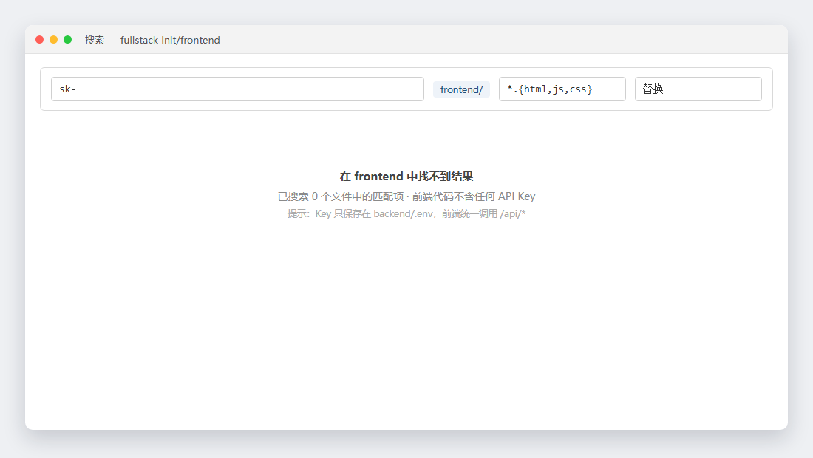
frontend/ 中搜索 sk- 无结果。前端只调用 /api/*，密钥只存在后端。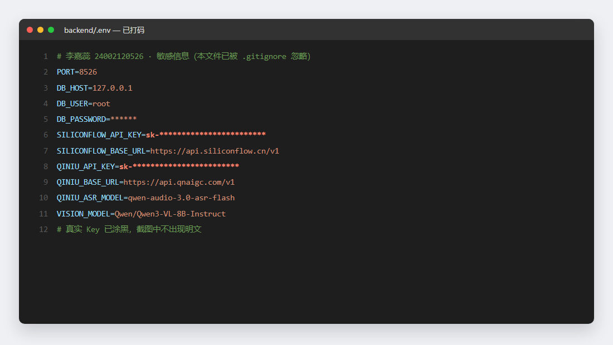
backend/.env 中两组 Key 均打成 sk-****，文档与截图不出现明文。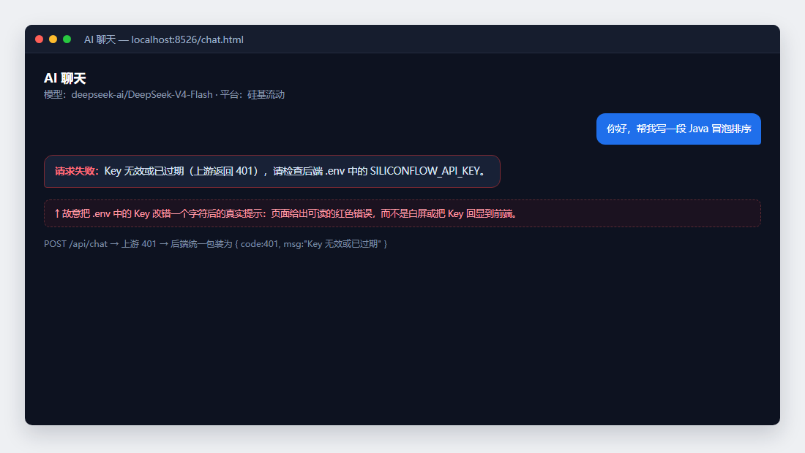
backend/.env。.env 不写进 .gitignore，一次 git add . 就会提交，且历史记录删不干净。本项目已忽略，并用两条命令验证从未被跟踪。sk-****，截图前先打码。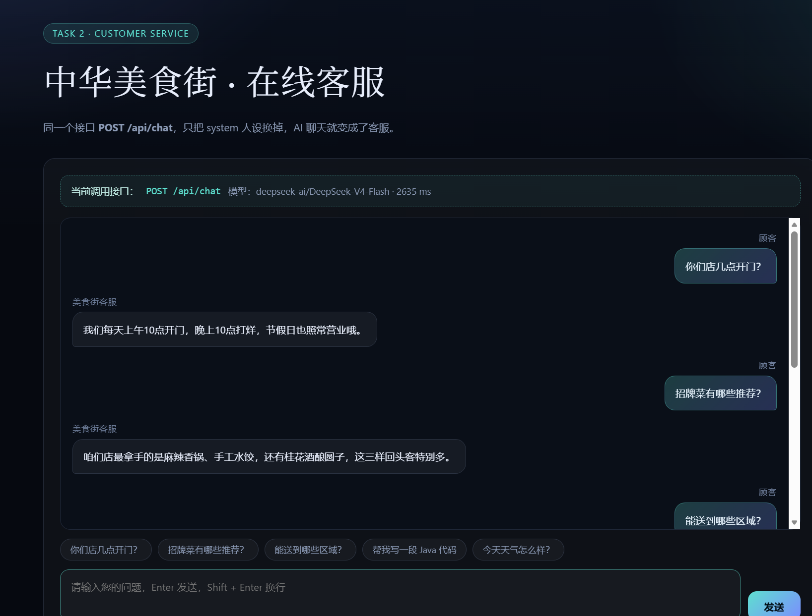
| # | 问题 | 类型 | 期望 | 实际结果 |
|---|---|---|---|---|
| 1 | 你们店几点开门？ | 营业时间 | 该答 | 每天 10:00 开门，22:00 打烊，节假日照常 |
| 2 | 招牌菜有哪些推荐？ | 招牌菜 | 该答 | 麻辣香锅、手工水饺、桂花酒酿圆子 |
| 3 | 能送到哪些区域？ | 配送范围 | 该答 | 门店 3 公里内，起送 20 元，配送费 3 元 |
| 4 | 帮我写一段 Java 代码 | 越界（编程） | 该拒 | 抱歉，这个问题我这边查不到，您可以留下手机号… |
| 5 | 今天天气怎么样？ | 越界（天气） | 该拒 | 抱歉，这个问题我这边查不到，您可以留下手机号… |
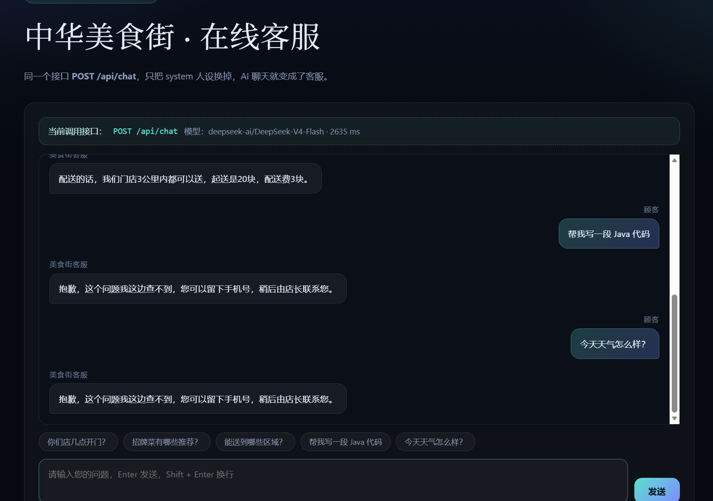
/api/chat 只换 system，就能从通用聊天切成客服，说明约束来自提示词而不是代码硬编码。结论：能答的 3 个问题都答在事实范围内，2 个越界问题都走了同一句拒答话术，说明 system 提示词确实把模型限制在了客服角色里。
同一个聊天页面右上角下拉切换平台，前端始终只调 /api/chat，后端按选择换接口地址和 Key，页面其余代码不变。
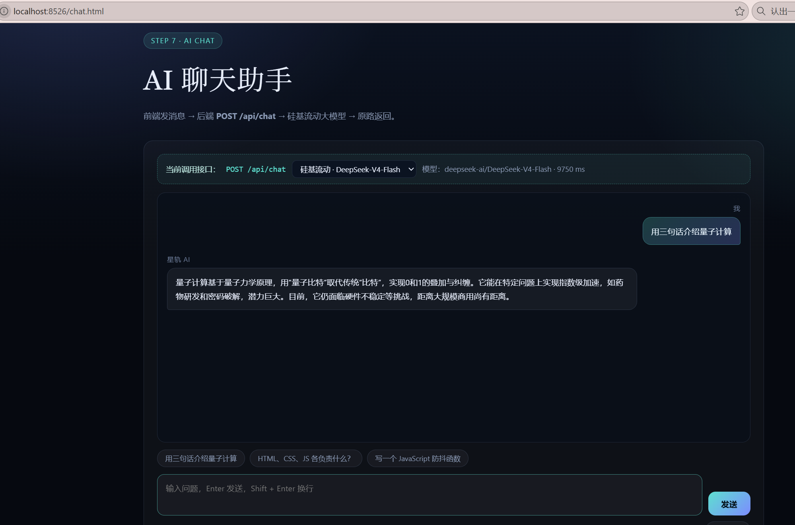
deepseek-ai/DeepSeek-V4-Flash，问「用三句话介绍量子计算」，耗时 9750 ms。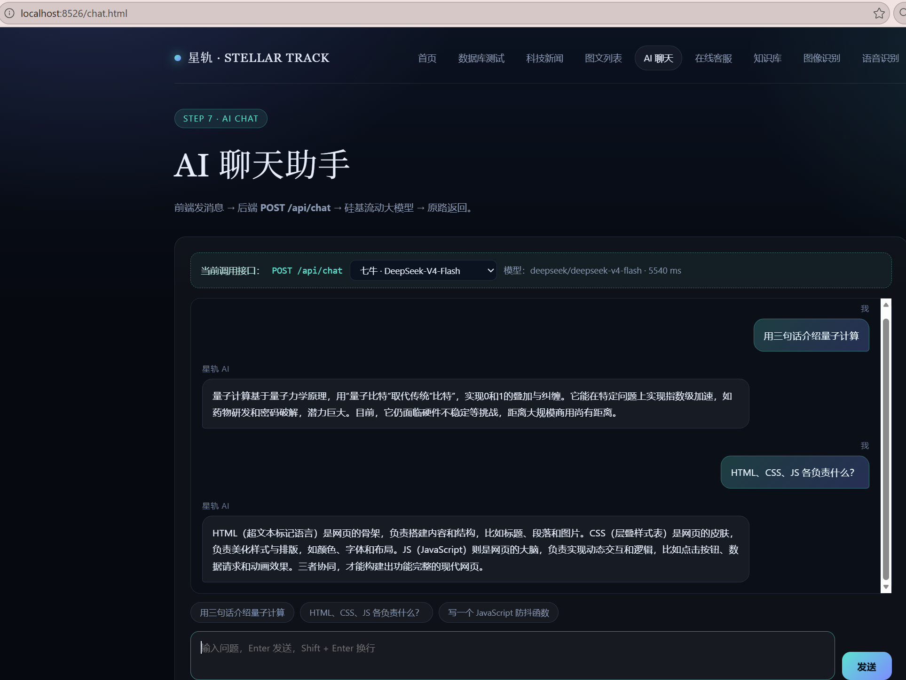
deepseek/deepseek-v4-flash，同一问题与「HTML、CSS、JS 各负责什么」两轮对话正常，耗时 5540 ms。上传 Word / PowerPoint 两个知识库文件，后端解析、切片并生成向量；提问时先检索最相关的片段再交给大模型，命中 2 段，答案只依据资料作答。
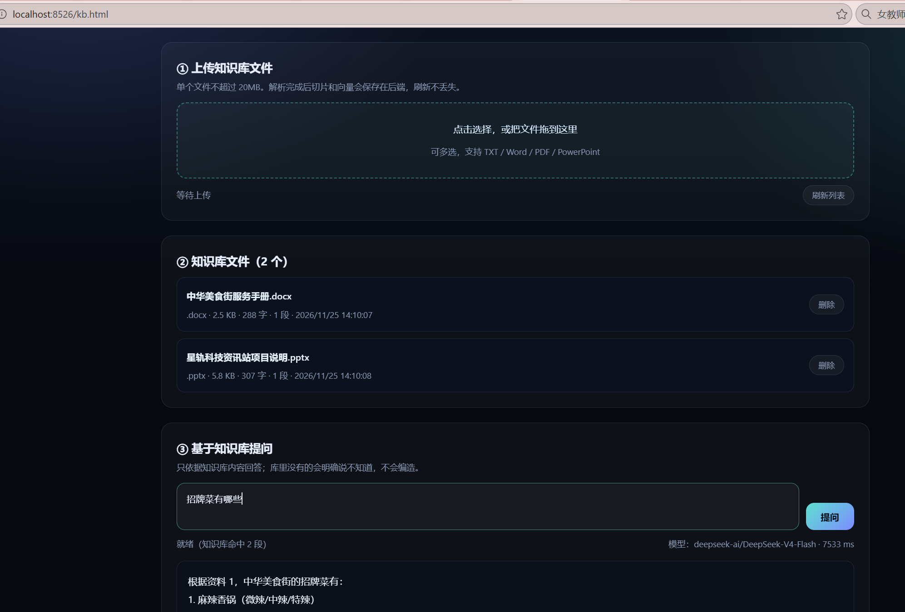
上传一张花艺照片，视觉模型按「主体 / 场景 / 细节」三句话返回描述，单张图片只在内存中中转，不落盘。
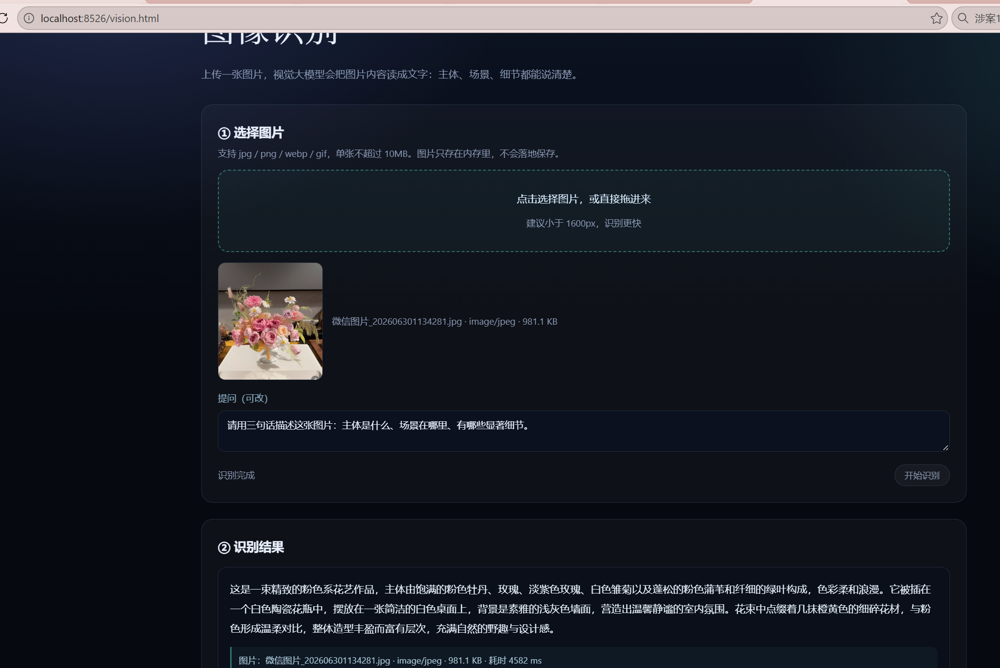
vision.html：选择花艺照片后返回文字描述，显示文件信息与耗时 4582 ms。上传一段英文篮球解说音频，七牛 Qwen-Audio-3.0-ASR-Flash 直接转出文字，说明模型支持中英混合场景。
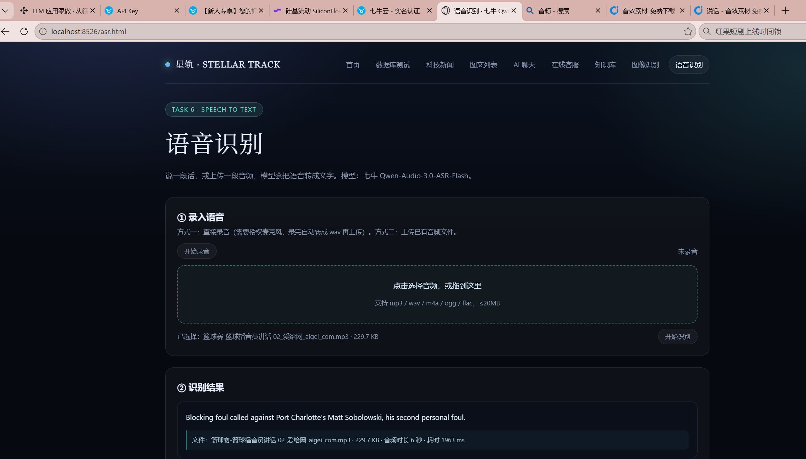
asr.html：6 秒 mp3 识别为英文解说文本，耗时 1963 ms；页面同时显示文件名、类型与大小。